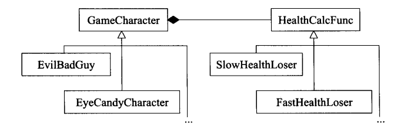

Effective C++:
05：编译器默认生成构造，拷贝构造，拷贝赋值运算符，析构，且都是public和inline的；如果类中含有reference或者const，或者父类的拷贝赋值运算符为private，则编译器拒绝生成拷贝赋值运算符——应该同样不能生成拷贝构造函数吧
06：若不想使用编译器自动生成的函数就该明确拒绝：
07：为多态基类声明virtual析构函数：
任何类只要带virtual函数就应该带virtual析构函数
如果不作为基类，就不要定义任何virtual包括虚析构
每个定义了virtual的类都有一个相对应的虚函数表，当对象调用某一个虚函数时，实际被调用的函数取决于虚表指针指向的虚函数表——编译器在其中寻找适当的指针
定义抽象类：手头没有纯虚函数使用，可以将析构定义为纯虚函数
标准string和STL都被设计不被作为基类使用
08：别让异常逃离析构：
09：绝不在构造和析构中调用virtual函数：
10：令operator=返回一个reference to *this：
为什么要这样做？考虑到连续赋值
这个标准适用于所有赋值相关操作如+=等
11：在operator=中处理自我赋值：
12：复制对象时勿忘其每一个成分
复制所有本地类的变量
调用所有基类内的适当的拷贝函数
13：以对象管理资源：RAII对象，构造中获得资源，析构中释放资源
14：在资源管理类中提供对原始资源的访问
18：让接口容易被正确使用，不易被误用
19：定义一个新类型
20：用const引用的方式代替值传递：
21：必须返回对象时，别妄想返回引用，就让它返回一个新对象呗，编译器会实施最优化，某些情况下operator*返回值的构造和析构可被 安全的消除
22：将成员变量声明为private
23：以非成员，非友元替换成员函数，有时候非成员比成员函数更具封装性——没太理解在哪些情况下更具有封装性
26：尽可能延后变量定义式的出现时间：
27：尽量少做转型动作
28：避免返回handles指向对象内部成分——需要再复习
29：为"异常安全"而努力
30：inline函数：对此函数的调用用函数本体替换
优点：
缺点：
inline只是对编译器的一个申请而不是强制命令，定义的inline的函数是否是真的inline取决于编译器
可以隐式提出：将函数定义于class定义式内，也可加inlin显式指出
inline函数一定被置于头文件内，是编译期行为
编译器不会对通过函数指针调用实施inlining
inline无法随着程序库的升级而升级：一旦对inline函数f有修改，用到f的所有地方都要重新编译；但如果是non-inline函数只需重新链接即可，如果是动态链接都不用重新链接
综上：
将大多数inlining限制在小型，被频繁调用的函数身上，使得调试和二进制升级更容易，也可使潜在的代码膨胀问题最小化，
31：将文件之间的编译依存关系降至最低：用声明的依存性代替定义的依存性
32：确保public继承塑模出is-a的关系
33：避免遮掩继承而来的名称
34：区分接口继承和实现继承：
35：考虑virtual函数以外的其他选择：
NVI(non-virtual interface)手法（strategy模式特殊形式）:
由函数对象(包括函数指针)实现的strategy模式（用函数对象代替虚函数）
传统的strategy模式:由两个继承体系实现，代码实现见176
36：绝不重新定义继承而来的非虚函数：
37：绝不重新定义继承而来的默认参数值
38：通过复合塑模出has-a：在类中定义其他类型的变量
39：谨慎使用private继承
40：谨慎使用多重继承
42：typename的双重意义：
43：学习处理模板化基类内的名称：父类是模板类，子类的方法内调用父类成员，是不能直接调用的，编译器会报错；因为模板只有当具体化的时候才知道它是什么，有三种方式避免这种情况：
44：通过成员函数模板接受所有兼容类型
47：使用traits_classes表现类型信息
MoreEffective：
01：指针与引用的区别：
05：类型转换：两种函数允许编译器进行转换
单参数构造函数：只有一个参数即可调用构造函数，或是虽定义了多个参数，但第一个参数以后的所有参数都有默认；通过声明explicit关键字，编译器会拒绝为隐式类型转换调用单参数构造函数
隐式类型转换运算符：operator 关键字，不需要定义函数的返回类型，因为返回类型就是这个函数的名字——谨慎定义类型转换函数(more effective c++ 5),解决的方法是不使用关键字的等同的函数来替代转换运算符；隐式类型转换可能会出现的问题：effective c++ 15
越有经验的C++程序员越喜欢避开类型转换运算符
注意，在哪些情况下会调用隐式类型转换？？？
06：自增，自减操作符的前缀与后缀形式的区别
07：不要重载"&&", "||", ","
"&&"/"||": C++使用短路求值法，一旦确定布尔表达式的真假，即使部分表达式没有被测试，仍然停止运算
所以说，如果重载了这两个就会改变游戏规则：用函数调用发代替了短路求值法
如果重载(operator&&(expr1, expr2)),不确定expr1和expr2哪个先调用，有可能与短路求值法完全相反
逗号表达式：一个包含逗号的表达式先计算逗号左边的表达式，然后计算右边的，整个表达式的结果是逗号右边表达式的结果
不能重载的运算符：.; .*; ::; ?:; new; delete; sizeof; typeid
22：宁以by-reference to const传递参数：值传递有可能导致对象被析构
25：虚构造：行为像构造函数，但视其输入，产生不同类型的对象；虚拷贝构造：返回一个指针，指向其调用者的一个新副本，基于此，虚拷贝构造以copyself或cloneself命名，虚拷贝构造就是真正的调用了拷贝构造而已；
26：限制class产生的对象的数量
阻止初始化：
阻止初始化：构造声明为private——C++11应该可以声明为=delete
只允许一个对象：static
成为一个function static而非calss static：
function static在函数第一次调用的时候会产生，而class static对象即使从来不用，也会构造和析构
function static确切知道初始化时机，而class static不一定在什么时候初始化。C++为同一编译单元的static的初始化顺序是保证的，但对不同单元的static初始化顺序没有任何说明
缺点：虽然符合对象的个数为1，但却限制了每次程序执行时只能有唯一一个对象
解决办法：对象计数和虚构造结合
有限个数的对象：static数据成员记录初始化个数，超出数量时抛出异常，缺点是：
缺点：
该类对象在三种状态下生存：他自己；派生物的base class成分；内嵌于较大对象之中。这些不同状态把追踪当前对象个数的意义搞混乱了，解决办法：构造声明为private，带有private的构造不能用作base class；且不能嵌套在其他对象中
终极解决方案：使用继承自对象引用计数类的带伪构造函数的类
27:要求或禁止对象产生于heap之中：
要求对象产生于heap中：
禁止对象产生于heap中：
28：智能指针：
解引用操作：
operator*返回的是一个引用而不是对象，因为返回的指针不需要非得指向类型为T的对象，有可能是T的派生类对象！
operator->:返回值有点特殊，如pt->mem_func()会被编译器解释为(pt.operator->())->mem_func() (为什么会解释成这样？)
测试smart pointer是否为NULL：隐式转换为bool取代隐式转换为void*
智能指针转换为原始指针：提供一个隐式转换符：重载运算符T*，但这得以轻易地直接对原始指针做动作，回避了智能指针当初的设计目标；提供隐式转换会打开一个bug的门户，不要提供对dump pointers的隐式转换操作符
smart pointers和与继承有关的类型转换：将非虚成员函数声明为templates；最好的情况就是使用member templates来产生转换函数，，然后在模棱两可的时候使用转型动作
smart pointers与const
29：引用计数
EffectiveSTL
43：尽量用算法代替手写循环，有三个理由：
效率：算法通常比程序员产生的循环更高效
正确性：写循环比调用算法更容易出错
可维护性：算法通常更干净直观
对void*变量不能直接通过在其前面加上*的方式取值，需要转成具体如int*类型；或void**也是可以的
void指针不能复引用
*vp//错误
因为void指针只知道,指向变量/对象的起始地址
而不知道指向变量/对象的大小(占几个字节)所以无法正确引用
1. （more effective c++ 1）不存在指向空值的引用，意味着使用引用的效率比使用指针的要高，因为在使用引用前不需要测试他的合法性
指针与引用的另一个区别：指针可以被重新赋值以指向另一个不同的对象，引用则总是指向在初始化时被指定的对象，引用则总是指向在初始化时被指定的对象，以后不能改变；所以当必须指向一个对象且不改变其指向；或者重载操作符并防止不必要的语义误解时使用引用；其他情况下使用指针
运行时类型识别（RTTI）：
typeid运算符，用于返回表达式的类型，形式为typeid(e)，e可以是任意表达式或类型的名字，操作的结果是一个常量对象的引用
dynamic_cast运算符：用于将基类的指针或引用安全的转换为派生类的指针或引用
注意：
1.使用RTTI运算符蕴含着更多的风险